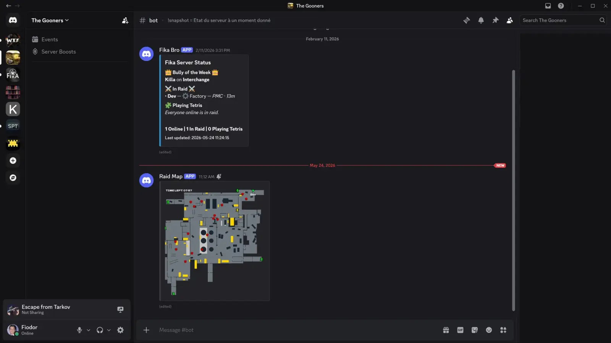
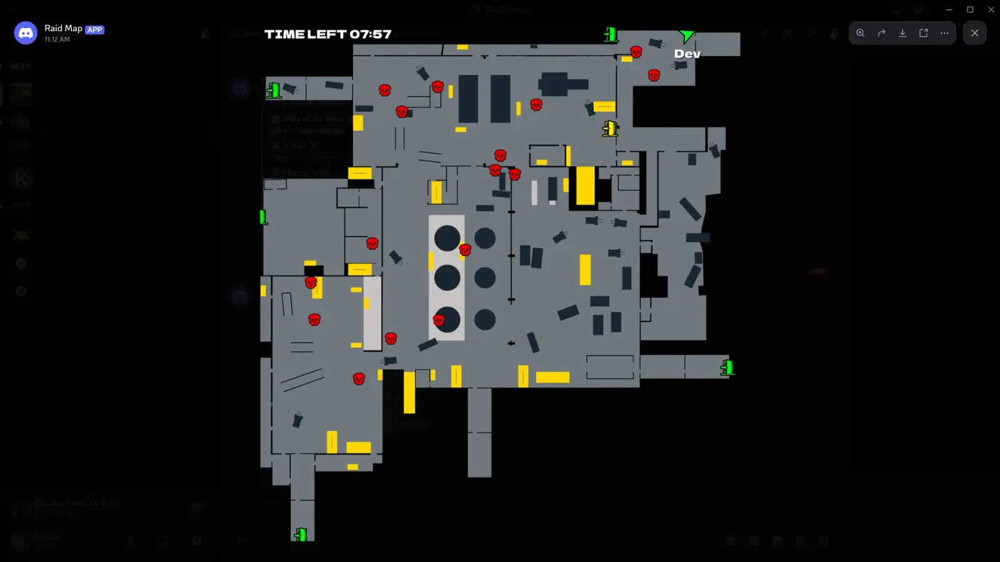

Discord Raid Map
- Downloads
- 378
- Favourites
- 4
- Mod lists
- 4
What does it do ?:
Creates a PNG of the current raid of the host and posts it on your discord via a webhook.
Updates it at the interval you set.
Customization:
- Set the refresh interval to whatever you fancy.
- Choose your own font. Add
.ttfor.otffiles toAssets\Fonts, restart the game, then choose one withMap Text > Map Text Font.Defaultuses the built-in bitmap font. - Rename the Discord message (eg: Headless 1 etc…)
- Change font sizes
- Marker images are loaded from
Assets\Markers. Replaceplayer.png,skull_enemy.png,skull_boss.png,airdrop.png,extract.png, orextract_requirements.pngto customize them. Markers > Marker Display Sizecontrols how large markers appear on the map. Source PNGs can be larger than this value for sharper downsampling.
Examples:


Installation:
-
Open the downloaded zip file.
-
Drag the BepInEx folder from the zip file into your SPT folder.
-
Set
Discord > Webhook Urlin the generated BepInEx config. (https://support.discord.com/hc/en-us/articles/228383668-Intro-to-Webhooks) -
???
-
Profit

Support:
Discord thread in the SPT discord : https://discord.com/channels/875684761291599922/1482076311903146054
FAQ
Q: What if I’m using a headless ?
A: The mod only sends the Discord message if the client is the host, so the mod can go everywhere and there’ll only be one message even if there are multiple players with the mod installed.
This also means that the mod needs to be on the headless since it’s the host.
Thanks:
The whole SPT and Fika teams for making this awesome project.
Drakia for the original gif and his config order automatizer.
Lacy for creating Fika and re-igniting my love for Tarkov.
Acid for letting me use his Labyrinth map.
Shebuka for letting me use all his maps.
mp-stark for his initial work on Dynamic Maps.
Disclaimer:
After having thought about it for a while I’m going to retire from modding for the time being.
I’m relying way too much on AI to do most of the heavy work. Whenever I see AI art I can’t stop myself from being disgusted by it and I’ve come to feel the same way about AI mods. Hence why I’ve decided to stop modding altogether and dedicate the free time I have to learn C# and Unity.
The only thing I’ll keep updated will be the per-scope config for PiP-Disabler.
If anyone wants to maintain my mods they’re free to do so ! Although PiP-Disabler is an absolute mess and would probably need to be rewritten from the ground up to be maintainable…
Version
1.0.0
Initial release